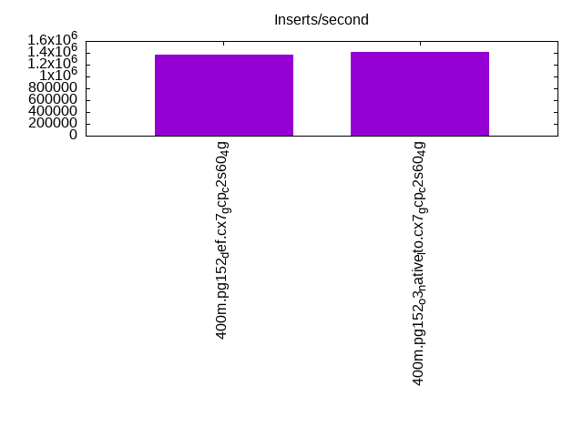
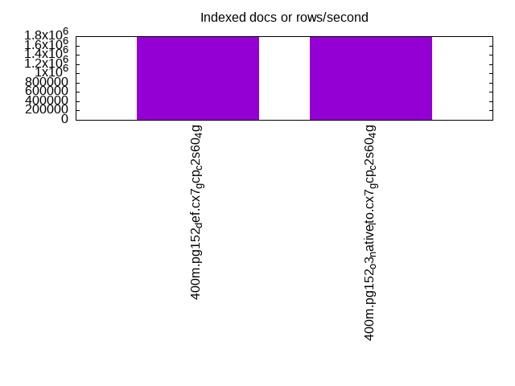
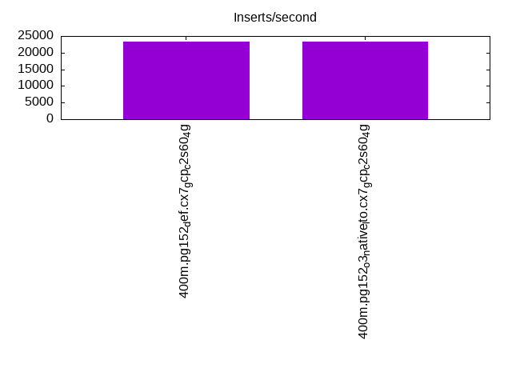
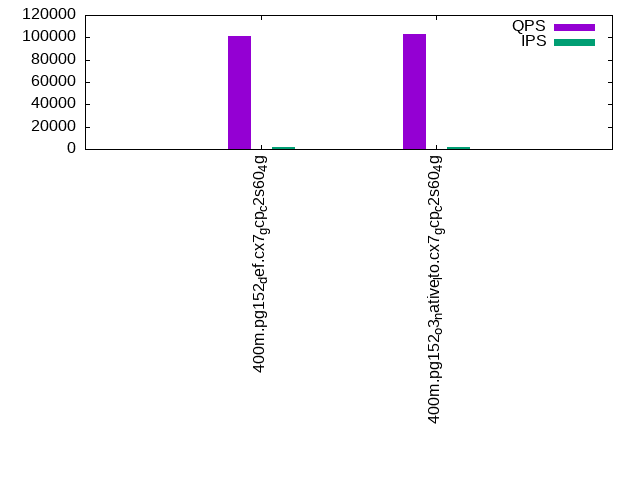
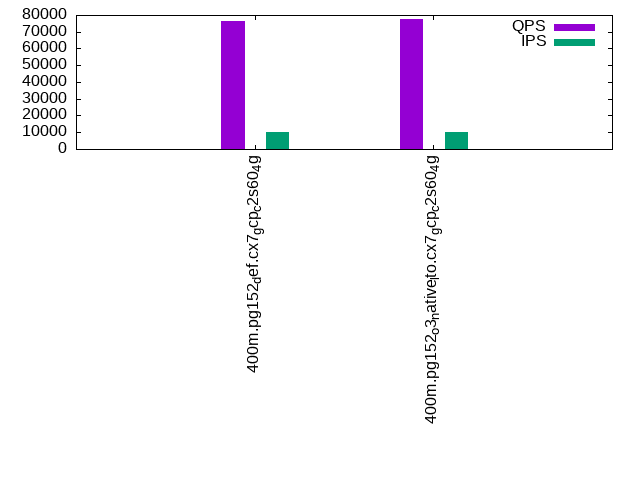
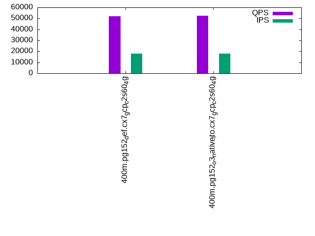

This is a report for the insert benchmark with 400M docs and 20 client(s). It is generated by scripts (bash, awk, sed) and Tufte might not be impressed. An overview of the insert benchmark is here and a short update is here. Below, by DBMS, I mean DBMS+version.config. An example is my8020.c10b40 where my means MySQL, 8020 is version 8.0.20 and c10b40 is the name for the configuration file.
The test server is a c2-standard-60 from GCP with 30 cores, hyperthreading disabled, 240G RAM and 3T from XFS and SW RAID 0 striped over 8 local NVMe drives. The benchmark was run with 20 clients and there were 1 or 2 connections per client (1 for queries, 1 for inserts). The benchmark loads 400M rows without secondary indexes, creates secondary indexes, loads another 400M rows then does 3 read+write tests for one hour each that do queries as fast as possible with 100, 500 and then 1000 writes/second/client concurrent with the queries. Each read-write test runs for 1800 seconds. The test was configured to use a table per client. The database fits in the OS page cache but not the DBMS buffer pool. Clients and the DBMS share one server. The per-database configs are in the per-database subdirectories here.
The tested DBMS are:
The numbers are inserts/s for l.i0 and l.i1, indexed docs (or rows) /s for l.x and queries/s for q*.2. The values are the average rate over the entire test for inserts (IPS) and queries (QPS). The range of values for IPS and QPS is split into 3 parts: bottom 25%, middle 50%, top 25%. Values in the bottom 25% have a red background, values in the top 25% have a green background and values in the middle have no color. A gray background is used for values that can be ignored because the DBMS did not sustain the target insert rate. Red backgrounds are not used when the minimum value is within 80% of the max value.
| dbms | l.i0 | l.x | l.i1 | q100.1 | q500.1 | q1000.1 |
|---|---|---|---|---|---|---|
| 400m.pg152_def.cx7_gcp_c2s60_4g | 1369863 | 1778222 | 23213 | 100900 | 76236 | 51779 |
| 400m.pg152_o3_native_lto.cx7_gcp_c2s60_4g | 1418440 | 1786161 | 23245 | 103293 | 77518 | 52544 |
This lists the average rate of inserts/s for the tests that do inserts concurrent with queries. For such tests the query rate is listed in the table above. The read+write tests are setup so that the insert rate should match the target rate every second. Cells that are not at least 95% of the target have a red background to indicate a failure to satisfy the target.
| dbms | q100.1 | q500.1 | q1000.1 |
|---|---|---|---|
| pg152_def.cx7_gcp_c2s60_4g | 1977 | 9885 | 18109 |
| pg152_o3_native_lto.cx7_gcp_c2s60_4g | 1977 | 9885 | 18109 |
| target | 2000 | 10000 | 20000 |
l.i0: load without secondary indexes. Graphs for performance per 1-second interval are here.
Average throughput:
Insert response time histogram: each cell has the percentage of responses that take <= the time in the header and max is the max response time in seconds. For the max column values in the top 25% of the range have a red background and in the bottom 25% of the range have a green background. The red background is not used when the min value is within 80% of the max value.
| dbms | 256us | 1ms | 4ms | 16ms | 64ms | 256ms | 1s | 4s | 16s | gt | max |
|---|---|---|---|---|---|---|---|---|---|---|---|
| pg152_def.cx7_gcp_c2s60_4g | 61.996 | 36.869 | 1.067 | 0.029 | 0.026 | 0.013 | 0.001 | 1.227 | |||
| pg152_o3_native_lto.cx7_gcp_c2s60_4g | 62.805 | 36.181 | 0.937 | 0.035 | 0.026 | 0.016 | 0.967 |
Performance metrics for the DBMS listed above. Some are normalized by throughput, others are not. Legend for results is here.
ips qps rps rmbps wps wmbps rpq rkbpq wpi wkbpi csps cpups cspq cpupq dbgb1 dbgb2 rss maxop p50 p99 tag 1369863 0 570 6.7 9792.5 581.1 0.000 0.005 0.007 0.434 207947 59.6 0.152 13 38.3 103.2 NA 1.227 78813 14784 400m.pg152_def.cx7_gcp_c2s60_4g 1418440 0 469 6.6 10077.5 603.0 0.000 0.005 0.007 0.435 225438 58.9 0.159 12 38.3 103.2 NA 0.967 81511 8695 400m.pg152_o3_native_lto.cx7_gcp_c2s60_4g
l.x: create secondary indexes.
Average throughput:
Performance metrics for the DBMS listed above. Some are normalized by throughput, others are not. Legend for results is here.
ips qps rps rmbps wps wmbps rpq rkbpq wpi wkbpi csps cpups cspq cpupq dbgb1 dbgb2 rss maxop p50 p99 tag 1778222 0 5641 248.2 5947.7 778.9 0.003 0.143 0.003 0.449 116732 19.6 0.066 3 73.5 195.7 NA 0.109 NA NA 400m.pg152_def.cx7_gcp_c2s60_4g 1786161 0 8844 252.7 5853.6 761.1 0.005 0.145 0.003 0.436 118433 19.8 0.066 3 73.5 193.7 NA 0.597 NA NA 400m.pg152_o3_native_lto.cx7_gcp_c2s60_4g
l.i1: continue load after secondary indexes created. Graphs for performance per 1-second interval are here.
Average throughput:
Insert response time histogram: each cell has the percentage of responses that take <= the time in the header and max is the max response time in seconds. For the max column values in the top 25% of the range have a red background and in the bottom 25% of the range have a green background. The red background is not used when the min value is within 80% of the max value.
| dbms | 256us | 1ms | 4ms | 16ms | 64ms | 256ms | 1s | 4s | 16s | gt | max |
|---|---|---|---|---|---|---|---|---|---|---|---|
| pg152_def.cx7_gcp_c2s60_4g | 0.030 | 88.573 | 11.393 | 0.004 | 0.645 | ||||||
| pg152_o3_native_lto.cx7_gcp_c2s60_4g | 0.015 | 88.649 | 11.332 | 0.004 | 0.545 |
Performance metrics for the DBMS listed above. Some are normalized by throughput, others are not. Legend for results is here.
ips qps rps rmbps wps wmbps rpq rkbpq wpi wkbpi csps cpups cspq cpupq dbgb1 dbgb2 rss maxop p50 p99 tag 23213 0 70039 721.1 63015.2 600.8 3.017 31.812 2.715 26.505 132263 12.1 5.698 156 163.3 259.1 NA 0.645 1199 599 400m.pg152_def.cx7_gcp_c2s60_4g 23245 0 70377 724.9 63078.2 601.3 3.028 31.933 2.714 26.487 132716 11.8 5.709 152 163.3 257.9 NA 0.545 1199 599 400m.pg152_o3_native_lto.cx7_gcp_c2s60_4g
q100.1: range queries with 100 insert/s per client. Graphs for performance per 1-second interval are here.
Average throughput:
Query response time histogram: each cell has the percentage of responses that take <= the time in the header and max is the max response time in seconds. For max values in the top 25% of the range have a red background and in the bottom 25% of the range have a green background. The red background is not used when the min value is within 80% of the max value.
| dbms | 256us | 1ms | 4ms | 16ms | 64ms | 256ms | 1s | 4s | 16s | gt | max |
|---|---|---|---|---|---|---|---|---|---|---|---|
| pg152_def.cx7_gcp_c2s60_4g | 66.752 | 33.001 | 0.243 | 0.004 | nonzero | nonzero | 0.254 | ||||
| pg152_o3_native_lto.cx7_gcp_c2s60_4g | 67.457 | 32.292 | 0.244 | 0.006 | nonzero | nonzero | 0.182 |
Insert response time histogram: each cell has the percentage of responses that take <= the time in the header and max is the max response time in seconds. For max values in the top 25% of the range have a red background and in the bottom 25% of the range have a green background. The red background is not used when the min value is within 80% of the max value.
| dbms | 256us | 1ms | 4ms | 16ms | 64ms | 256ms | 1s | 4s | 16s | gt | max |
|---|---|---|---|---|---|---|---|---|---|---|---|
| pg152_def.cx7_gcp_c2s60_4g | 0.007 | 99.879 | 0.112 | 0.001 | 0.281 | ||||||
| pg152_o3_native_lto.cx7_gcp_c2s60_4g | 0.021 | 99.864 | 0.110 | 0.006 | 0.304 |
Performance metrics for the DBMS listed above. Some are normalized by throughput, others are not. Legend for results is here.
ips qps rps rmbps wps wmbps rpq rkbpq wpi wkbpi csps cpups cspq cpupq dbgb1 dbgb2 rss maxop p50 p99 tag 1977 100900 88370 759.2 6332.8 71.2 0.876 7.705 3.203 36.861 471003 37.3 4.668 111 163.9 235.0 0.0 0.254 4986 4523 400m.pg152_def.cx7_gcp_c2s60_4g 1977 103293 91227 778.3 6342.2 72.2 0.883 7.715 3.208 37.422 482723 36.2 4.673 105 163.9 233.1 0.0 0.182 5306 4651 400m.pg152_o3_native_lto.cx7_gcp_c2s60_4g
q500.1: range queries with 500 insert/s per client. Graphs for performance per 1-second interval are here.
Average throughput:
Query response time histogram: each cell has the percentage of responses that take <= the time in the header and max is the max response time in seconds. For max values in the top 25% of the range have a red background and in the bottom 25% of the range have a green background. The red background is not used when the min value is within 80% of the max value.
| dbms | 256us | 1ms | 4ms | 16ms | 64ms | 256ms | 1s | 4s | 16s | gt | max |
|---|---|---|---|---|---|---|---|---|---|---|---|
| pg152_def.cx7_gcp_c2s60_4g | 60.461 | 37.965 | 1.441 | 0.126 | 0.006 | nonzero | 0.232 | ||||
| pg152_o3_native_lto.cx7_gcp_c2s60_4g | 60.720 | 37.717 | 1.433 | 0.125 | 0.005 | nonzero | 0.186 |
Insert response time histogram: each cell has the percentage of responses that take <= the time in the header and max is the max response time in seconds. For max values in the top 25% of the range have a red background and in the bottom 25% of the range have a green background. The red background is not used when the min value is within 80% of the max value.
| dbms | 256us | 1ms | 4ms | 16ms | 64ms | 256ms | 1s | 4s | 16s | gt | max |
|---|---|---|---|---|---|---|---|---|---|---|---|
| pg152_def.cx7_gcp_c2s60_4g | 0.007 | 92.267 | 7.726 | 0.001 | 0.279 | ||||||
| pg152_o3_native_lto.cx7_gcp_c2s60_4g | 0.006 | 92.328 | 7.665 | 0.001 | 0.266 |
Performance metrics for the DBMS listed above. Some are normalized by throughput, others are not. Legend for results is here.
ips qps rps rmbps wps wmbps rpq rkbpq wpi wkbpi csps cpups cspq cpupq dbgb1 dbgb2 rss maxop p50 p99 tag 9885 76236 93775 893.1 29198.0 307.1 1.230 11.996 2.954 31.812 413179 36.7 5.420 144 167.4 236.7 0.0 0.232 4046 1885 400m.pg152_def.cx7_gcp_c2s60_4g 9885 77518 96294 900.6 29292.6 307.5 1.242 11.897 2.963 31.853 420705 35.7 5.427 138 167.4 236.7 0.0 0.186 4093 1982 400m.pg152_o3_native_lto.cx7_gcp_c2s60_4g
q1000.1: range queries with 1000 insert/s per client. Graphs for performance per 1-second interval are here.
Average throughput:
Query response time histogram: each cell has the percentage of responses that take <= the time in the header and max is the max response time in seconds. For max values in the top 25% of the range have a red background and in the bottom 25% of the range have a green background. The red background is not used when the min value is within 80% of the max value.
| dbms | 256us | 1ms | 4ms | 16ms | 64ms | 256ms | 1s | 4s | 16s | gt | max |
|---|---|---|---|---|---|---|---|---|---|---|---|
| pg152_def.cx7_gcp_c2s60_4g | 53.641 | 41.923 | 3.826 | 0.572 | 0.038 | nonzero | 0.065 | ||||
| pg152_o3_native_lto.cx7_gcp_c2s60_4g | 53.814 | 41.812 | 3.768 | 0.569 | 0.038 | nonzero | 0.085 |
Insert response time histogram: each cell has the percentage of responses that take <= the time in the header and max is the max response time in seconds. For max values in the top 25% of the range have a red background and in the bottom 25% of the range have a green background. The red background is not used when the min value is within 80% of the max value.
| dbms | 256us | 1ms | 4ms | 16ms | 64ms | 256ms | 1s | 4s | 16s | gt | max |
|---|---|---|---|---|---|---|---|---|---|---|---|
| pg152_def.cx7_gcp_c2s60_4g | 82.929 | 17.071 | 0.001 | 0.291 | |||||||
| pg152_o3_native_lto.cx7_gcp_c2s60_4g | 0.007 | 82.874 | 17.118 | 0.001 | 0.305 |
Performance metrics for the DBMS listed above. Some are normalized by throughput, others are not. Legend for results is here.
ips qps rps rmbps wps wmbps rpq rkbpq wpi wkbpi csps cpups cspq cpupq dbgb1 dbgb2 rss maxop p50 p99 tag 18109 51779 96926 948.9 51814.6 530.0 1.872 18.767 2.861 29.972 363039 36.4 7.011 211 179.6 272.2 0.0 0.065 2717 1423 400m.pg152_def.cx7_gcp_c2s60_4g 18109 52544 97400 952.5 51885.2 530.8 1.854 18.562 2.865 30.015 367308 35.6 6.990 203 179.6 272.3 0.0 0.085 2750 1439 400m.pg152_o3_native_lto.cx7_gcp_c2s60_4g
l.i0: load without secondary indexes
Performance metrics for all DBMS, not just the ones listed above. Some are normalized by throughput, others are not. Legend for results is here.
ips qps rps rmbps wps wmbps rpq rkbpq wpi wkbpi csps cpups cspq cpupq dbgb1 dbgb2 rss maxop p50 p99 tag 1369863 0 570 6.7 9792.5 581.1 0.000 0.005 0.007 0.434 207947 59.6 0.152 13 38.3 103.2 NA 1.227 78813 14784 400m.pg152_def.cx7_gcp_c2s60_4g 1418440 0 469 6.6 10077.5 603.0 0.000 0.005 0.007 0.435 225438 58.9 0.159 12 38.3 103.2 NA 0.967 81511 8695 400m.pg152_o3_native_lto.cx7_gcp_c2s60_4g
l.x: create secondary indexes
Performance metrics for all DBMS, not just the ones listed above. Some are normalized by throughput, others are not. Legend for results is here.
ips qps rps rmbps wps wmbps rpq rkbpq wpi wkbpi csps cpups cspq cpupq dbgb1 dbgb2 rss maxop p50 p99 tag 1778222 0 5641 248.2 5947.7 778.9 0.003 0.143 0.003 0.449 116732 19.6 0.066 3 73.5 195.7 NA 0.109 NA NA 400m.pg152_def.cx7_gcp_c2s60_4g 1786161 0 8844 252.7 5853.6 761.1 0.005 0.145 0.003 0.436 118433 19.8 0.066 3 73.5 193.7 NA 0.597 NA NA 400m.pg152_o3_native_lto.cx7_gcp_c2s60_4g
l.i1: continue load after secondary indexes created
Performance metrics for all DBMS, not just the ones listed above. Some are normalized by throughput, others are not. Legend for results is here.
ips qps rps rmbps wps wmbps rpq rkbpq wpi wkbpi csps cpups cspq cpupq dbgb1 dbgb2 rss maxop p50 p99 tag 23213 0 70039 721.1 63015.2 600.8 3.017 31.812 2.715 26.505 132263 12.1 5.698 156 163.3 259.1 NA 0.645 1199 599 400m.pg152_def.cx7_gcp_c2s60_4g 23245 0 70377 724.9 63078.2 601.3 3.028 31.933 2.714 26.487 132716 11.8 5.709 152 163.3 257.9 NA 0.545 1199 599 400m.pg152_o3_native_lto.cx7_gcp_c2s60_4g
q100.1: range queries with 100 insert/s per client
Performance metrics for all DBMS, not just the ones listed above. Some are normalized by throughput, others are not. Legend for results is here.
ips qps rps rmbps wps wmbps rpq rkbpq wpi wkbpi csps cpups cspq cpupq dbgb1 dbgb2 rss maxop p50 p99 tag 1977 100900 88370 759.2 6332.8 71.2 0.876 7.705 3.203 36.861 471003 37.3 4.668 111 163.9 235.0 0.0 0.254 4986 4523 400m.pg152_def.cx7_gcp_c2s60_4g 1977 103293 91227 778.3 6342.2 72.2 0.883 7.715 3.208 37.422 482723 36.2 4.673 105 163.9 233.1 0.0 0.182 5306 4651 400m.pg152_o3_native_lto.cx7_gcp_c2s60_4g
q500.1: range queries with 500 insert/s per client
Performance metrics for all DBMS, not just the ones listed above. Some are normalized by throughput, others are not. Legend for results is here.
ips qps rps rmbps wps wmbps rpq rkbpq wpi wkbpi csps cpups cspq cpupq dbgb1 dbgb2 rss maxop p50 p99 tag 9885 76236 93775 893.1 29198.0 307.1 1.230 11.996 2.954 31.812 413179 36.7 5.420 144 167.4 236.7 0.0 0.232 4046 1885 400m.pg152_def.cx7_gcp_c2s60_4g 9885 77518 96294 900.6 29292.6 307.5 1.242 11.897 2.963 31.853 420705 35.7 5.427 138 167.4 236.7 0.0 0.186 4093 1982 400m.pg152_o3_native_lto.cx7_gcp_c2s60_4g
q1000.1: range queries with 1000 insert/s per client
Performance metrics for all DBMS, not just the ones listed above. Some are normalized by throughput, others are not. Legend for results is here.
ips qps rps rmbps wps wmbps rpq rkbpq wpi wkbpi csps cpups cspq cpupq dbgb1 dbgb2 rss maxop p50 p99 tag 18109 51779 96926 948.9 51814.6 530.0 1.872 18.767 2.861 29.972 363039 36.4 7.011 211 179.6 272.2 0.0 0.065 2717 1423 400m.pg152_def.cx7_gcp_c2s60_4g 18109 52544 97400 952.5 51885.2 530.8 1.854 18.562 2.865 30.015 367308 35.6 6.990 203 179.6 272.3 0.0 0.085 2750 1439 400m.pg152_o3_native_lto.cx7_gcp_c2s60_4g
Insert response time histogram
256us 1ms 4ms 16ms 64ms 256ms 1s 4s 16s gt max tag 0.000 61.996 36.869 1.067 0.029 0.026 0.013 0.001 0.000 0.000 1.227 pg152_def.cx7_gcp_c2s60_4g 0.000 62.805 36.181 0.937 0.035 0.026 0.016 0.000 0.000 0.000 0.967 pg152_o3_native_lto.cx7_gcp_c2s60_4g
TODO - determine whether there is data for create index response time
Insert response time histogram
256us 1ms 4ms 16ms 64ms 256ms 1s 4s 16s gt max tag 0.000 0.000 0.000 0.030 88.573 11.393 0.004 0.000 0.000 0.000 0.645 pg152_def.cx7_gcp_c2s60_4g 0.000 0.000 0.000 0.015 88.649 11.332 0.004 0.000 0.000 0.000 0.545 pg152_o3_native_lto.cx7_gcp_c2s60_4g
Query response time histogram
256us 1ms 4ms 16ms 64ms 256ms 1s 4s 16s gt max tag 66.752 33.001 0.243 0.004 nonzero nonzero 0.000 0.000 0.000 0.000 0.254 pg152_def.cx7_gcp_c2s60_4g 67.457 32.292 0.244 0.006 nonzero nonzero 0.000 0.000 0.000 0.000 0.182 pg152_o3_native_lto.cx7_gcp_c2s60_4g
Insert response time histogram
256us 1ms 4ms 16ms 64ms 256ms 1s 4s 16s gt max tag 0.000 0.000 0.000 0.007 99.879 0.112 0.001 0.000 0.000 0.000 0.281 pg152_def.cx7_gcp_c2s60_4g 0.000 0.000 0.000 0.021 99.864 0.110 0.006 0.000 0.000 0.000 0.304 pg152_o3_native_lto.cx7_gcp_c2s60_4g
Query response time histogram
256us 1ms 4ms 16ms 64ms 256ms 1s 4s 16s gt max tag 60.461 37.965 1.441 0.126 0.006 nonzero 0.000 0.000 0.000 0.000 0.232 pg152_def.cx7_gcp_c2s60_4g 60.720 37.717 1.433 0.125 0.005 nonzero 0.000 0.000 0.000 0.000 0.186 pg152_o3_native_lto.cx7_gcp_c2s60_4g
Insert response time histogram
256us 1ms 4ms 16ms 64ms 256ms 1s 4s 16s gt max tag 0.000 0.000 0.000 0.007 92.267 7.726 0.001 0.000 0.000 0.000 0.279 pg152_def.cx7_gcp_c2s60_4g 0.000 0.000 0.000 0.006 92.328 7.665 0.001 0.000 0.000 0.000 0.266 pg152_o3_native_lto.cx7_gcp_c2s60_4g
Query response time histogram
256us 1ms 4ms 16ms 64ms 256ms 1s 4s 16s gt max tag 53.641 41.923 3.826 0.572 0.038 nonzero 0.000 0.000 0.000 0.000 0.065 pg152_def.cx7_gcp_c2s60_4g 53.814 41.812 3.768 0.569 0.038 nonzero 0.000 0.000 0.000 0.000 0.085 pg152_o3_native_lto.cx7_gcp_c2s60_4g
Insert response time histogram
256us 1ms 4ms 16ms 64ms 256ms 1s 4s 16s gt max tag 0.000 0.000 0.000 0.000 82.929 17.071 0.001 0.000 0.000 0.000 0.291 pg152_def.cx7_gcp_c2s60_4g 0.000 0.000 0.000 0.007 82.874 17.118 0.001 0.000 0.000 0.000 0.305 pg152_o3_native_lto.cx7_gcp_c2s60_4g